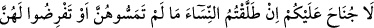
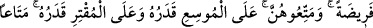
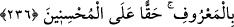

Ehl-i sülûkten yolun nihâyetine gelmiş olanların durumlarını ise herhangi bir şeyle
hasretmek mümkün değildir. Çünkü onlar, kesretle vahdetten, vahdetle de kesretten
perdelenmezler. Zira onlar, makam-ı ağyârı geçip, döndükleri her yönde nûrları
müşâhede etmişler ve neticede hakîkate ulaşmışlardır. Bu sebeple onların nazarında ne
hakîkî, ne de îtibârî bir ağyâr kalmıştır. Rasûl-i Ekrem (s.a.) Efendimiz’e kadınların
sevdirilmiş olması işte bu sebebe dayanır. Çünkü Rasûlullah (s.a.)’in sevgisi insanların
bildiği gibi değildir. Bilakis o, ancak vâris-i enbiyâ olanların muttali olabilecekleri
gizli bir sırdır. Bu konuda sözü bu kadar uzatmamın sebebi, yapılan açıklamaların
sûfîlerin uydurmalarından olmadığının bilinip bunların, işâret ettiğim mânâlara
hamledilmesi içindir. Bu yola sülûk etmeyen kimseler, ehl-i tahkîk ve tetkîkin
durumlarından anlamazlar.
236. Nikâhtan sonra henüz dokunmadan veya onlar için belli bir mehir tayin
etmeden kadınları boşarsanız bunda size mehir zorunluğu yoktur. Bu durumda
onlara müt’a (hediye cinsinden bir şeyler) verin. Zengin olan durumuna göre, fakir
de durumuna göre vermelidir. Münâsib bir müt’a vermek iyiler için bir borçtur.
Bu âyetteki “cünah”tan maksad, mehrin vücûbudur. Yâni bu durumda olanların mehir
verme sorumluluğu yoktur. Âyete şu şekilde mânâ vermek mümkündür: Boşama, cinsî
temastan önce vukû bulursa, hiçbir sûrette boşanan kimse mehir talebiyle zorlanmaz.
Ancak mehrin adı konmuş, mehir takdîr edilmiş ise o takdirde boşayanın, belirtilen
mehrin yarısını vermesi vâcib olur. Fakat mehir söylenmemiş ise, mehr-i mislin yarısını
değil, sadece bir miktar bir şey (müt’a) vermek gerekir. Talak, cinsî temastan sonra
olunca, eğer mehir konmuşsa, belirlenen mehrin tamamını, yok eğer tesbit olunmamış ise
mehr-i mislin tamamını vermek gerekir.
Belli bir mehir kararlaştırmadığınız ve cinsî temasta bulunmadığınız kadınları
boşadığınızda, onlara faydalanabilecekleri bazı şeyler (müt’a) veriniz. Bu şekilde bir
müt’a verilmesinin vacib kılınmasının hikmeti, kocanın, kadını boşamakla yalnız
bırakmasını bir ölçüde telâfi etmek içindir. Kişi, gücü nisbetinde, kadına bedenini
örteceği bir elbise, evden dışarı çıkarken üzerine giyeceği bir çarşaf veya pardesü ve
başını örteceği bir başörtüsü vermelidir.
Mûsî; yâni durumu iyi, zengin kimse, imkânı ve tâkatı ölçüsünde fakir de gücü
nisbetinde boşadığı hanımına bir şey vermelidir. Yâni verilen metâ; kadının değil,
erkeğin durumuna göredir. Beş dirhemden az olmamalı, mehr-i mislin yarısından da çok